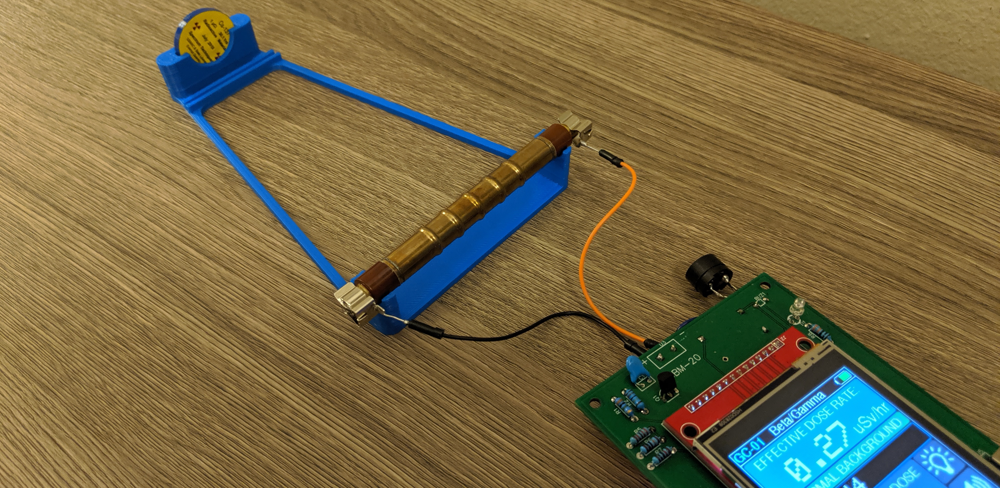

Design of a calibration device for the measurement of radiation doses
A homemade calibration device that quite adequately replaces a professional unit for my limited use case.
When I made my first Geiger counter, I used the officially published values for the sensitivity of the Soviet-era SBM-20 Geiger-Muller tubes I used for the detection of ionizing particles. One problem with this approach is that I would not accurately know the sensitivity of each individual tube, and since these tubes were quite old, having been manufactured in the Soviet era, so there was expectation of some random variability.

To more accurately determine the sensitivity, or specifically the counts-per-minute value detected by the tube per unit of effective absorbed dose, I decided to design and make my own calibration jig. I had a standard disk source with a known quantity of the radioactive Cesium-137 isotope, and could use some formulas or an online calculator to find the expected dose rate of gamma radiation at a given distance from the source.
The design includes a holder for the disc source that maintains the sample at a known height and orientation, and on the other end, it holds the Geiger tube at a fixed center-to-center distance. By measuring the total number of counts over a period of 10 minutes, a fairly accurate measurement of the counts per minute could be deduced. It also includes a mounting slot for a beta-particle shield to ensure that only the gamma emissions from the isotope sample make it to the tube.

The calibration factor that relates the counts per minute to the micorSieverts per hour dose reading is then calculated by comparing the measured value of the counts per minute to the expected effective dose rate at this distance.